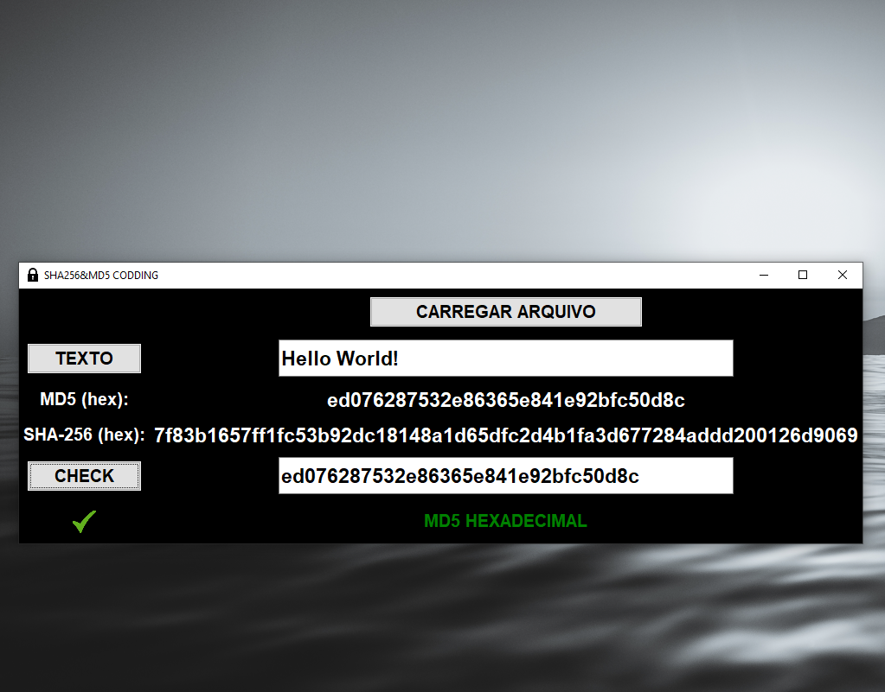

Caíque Ferreira
Desenvolvedor Back-end
Olá, meu nome é Caíque de Sousa Ferreira, sou formado Engenheiro Eletrônico atuando como Engenheiro de Software Jr no Itaú Unibanco.
Olá, meu nome é Caíque de Sousa Ferreira, sou formado Engenheiro Eletrônico atuando como Engenheiro de Software Jr no Itaú Unibanco.

Possuo conhecimentos em Python e C# para desenvolvimento back-end e habilidades na plataforma de computação em nuvem AWS. Realizo a análise e processamento ETL de Big Data com Python e SQL/NoSQL, utilizando os SGBDs SQLite, SQL Server, MySQL, PostgreSQL e MongoDB.
Desenvolvo firmware para microcontroladores da família PIC e ATMEL (ATMEGA328) utilizando as linguagens C/C++. Atuo nos ambientes operacionais Linux ou Windows e possuo conhecimentos avançados no pacote Office da Microsoft (Excel, Word e PowerPoint).
Atualmente, estou cursando o terceiro semestre de Análise e Desenvolvimento de Sistemas na Universidade Cruzeiro do Sul.



Abrir no GitHub